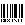
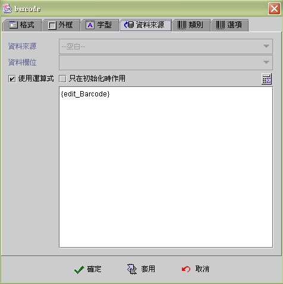
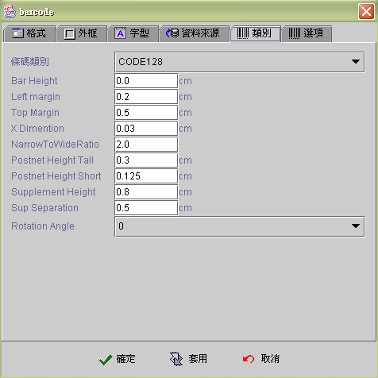
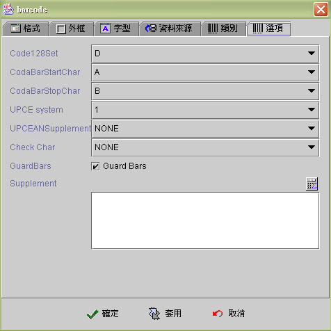

|

條碼元件 (Barcode component)

共用屬性 (common properties)
資料來源 (data source)
類別 (type properties)
選項 (options properties)
條碼元件的佈建執行
(deployment of barcode)
條碼檢查及加入檢查碼
(barcode
check and add checksum)
運算式屬性存取
(formula get/set properties)
jLIVE
Builder™ 的條碼元件 (Barcode component) 是 wrap
專業級條碼開發商(idautomation) Java™條碼元件的
Third party component。以下所述功能 (functions) 及執行期模組
(runtime classes) 皆屬 www.idautomation.com
所提供之測試版 (trial version)，設計師於應用程式開發完成佈建執行時，須按使用範圍另行採購正式版本
。jLIVE
Builder™ 將 idautomation 的條碼元件 Wrap 成 n-tiers
的元件，使其適用於 Web
應用程式及報表系統中，相關條碼元件的屬性除參照本文解說外，屬於條碼專業屬性請參照
www.idautomation.com Java™
元件之使用說明。
資料來源
(data source)
-
資料來源 (data source)：資料來源
-
資料欄位
(data field)：資料欄位。
-
使用運算式
(use formula)：使用運算式 (formula) 顯示運算後的結果，當視窗資料來源
(data source)
移動資料記錄、存檔、刪除或其他元件值內含值改變 (changed) 時，運算式
(formula) 將會自動重新計算即時同步更新。
-
只有在初始化時作用
(initial only)：運算式 (formula) 只在視窗開啟後，計算運算式並將結果顯示於編輯元件中，之後即不再自動計算更新
(compute and refresh)，設計師必須透過【設定元件內含值】的事件
(set component data event)，或重新計算以 SetProp()
的運算公式更新。

範例條碼：

▲Top
類別
(type properties)
-
條碼類別 (Barcode type)：條碼類別：目前共十八種。
-
條碼高度 (bar height)：條碼高度。
-
左緣邊距 (left margin)：條碼的左緣邊距。
上緣邊距 (top margin)：條碼的上緣邊距。
X 參數 (X dimension)：narrow
bars 的寬度。預設值為0.03，若將其值設為 0.001
可為一個像素寬的最小寬度條碼。(width in
centimeters of narrow bars. The default is 0.03. Set this value to .001 to
obtain the smallest barcode possible which is 1 pixel.)
Narrow to wide ratio：Sets
the multiplicator value for width bars. A value of 2 (default) means that
wide bars will be 2*N CM width.
Post net height tall：Height
in CM of POSTNET's tall bars. The default is 0.3.
Post net height short：Height
in CM of POSTNET's short bars. The default is 0.125.
Supplement height：Height
of the supplement. This is a multiplicator of the height of the code. The
default is 0.8 (80%).
Sup Separation：Separation
in CM between the barcode and the supplement.
Rotation Angle：Rotation
angle. Valid values are 0 (default), 90, 180 & 270.

▲Top
選項
(options properties)
-
Code 128 set：Sets
the character set to be used in code 128. Possible values are "0 for
AUTO", "A", "B" or "C". The default is
"AUTO".
-
Code Bar Start Char：Sets
the start character for CODABAR. The default is A.
-
Code Bar Stop Char：Sets
the stop character for CODABAR. The default is B.
-
UPCE system：Sets
the system to be used in UPCE. It can be "0" or "1". The
default is "1".
-
UPCEAN Supplement：Sets
the digits supplement for EAN or UPC codes.
-
Check Char：
CheckCharacter :
The checksum character will be calculated and appended to the code.
CheckCharacterInText
: The checksum character will be appended to the human readable
text;checksum characters cannot by displayed for Code 128.
-
Guard Bars：Guardbars
in EAN and UPC codes will be longer than data bars.
-
Supplement：Sets
the user defined 2 or 5 digit supplement for EAN or UPC codes.

▲Top
條碼元件的佈建執行
(deployment of barcode)
jLIVE
Builder™ 內含IDAutomation 測試版本的條碼程式模組 (LinearBarCode.jar)，應用程式開發者購買正式版本時，只要將此條碼程式模組
(LinearBarCode.jar) 更新即可。由於條碼程式模組 (LinearBarCode.jar)
是客製化模組 (custom module)，所以 製作應用程式
(make executable program) 時，在客製 Jar 檔的屬性中，必需將條碼程式模組 (LinearBarCode.jar) 填入，並將 條碼程式模組 (LinearBarCode.jar)
置放於應用程式 class 與 jlive.jar
同一個目錄下，當應用程式第一次在使用者端 (client)
執行時，條碼程式模組 (LinearBarCode.jar) 會自行載入。
▲Top
條碼檢查及加入檢查碼
(barcode
check and add checksum)
條碼檢查及加入檢查碼
(barcode
check and add checksum) 是 jLIVE Builder™ 內含的功能不需IDAutomation
的條碼程式模組 (LinearBarCode.jar)
即可運作。設計師可以用運算式檢查條碼是否正確或加入檢查碼。
-
BarCode(x)
：x → 條碼字串 (Barcode)，長度為 8 或 13。回覆值：正確→
1 ； 錯誤 → 0 。
-
BarCode(x,
0)：x → 條碼字串 (Barcode)，長度為 8 或 13。回覆值：正確→
1 ； 錯誤 → 0 。
-
BarCode(x,
1)：x → 條碼字串 (Barcode)，長度為 7 或 12。回覆值：
正確 →( 長度8 或13) 加入檢查碼的字串； 錯誤 →
原字串。
▲Top
運算式屬性存取
(formula get/set properties)
SetProp("元件名稱",
"屬性", 值) ：屬性設定。
SetProp("元件名稱",
"屬性", 值1, 值2)：屬性設定。
GetProp("元件名稱",
"屬性")：屬性讀取。
| Set
Properties |
| 屬性
(Properties) |
值1
(Value 1) |
值2
(Value 2) |
說明 (Descriptions) |
| enabled |
1 致能，0 失效 |
|
致能與失效。 |
| setfocus |
1 設定 Focus |
|
設定 Focus。 |
| visible |
1 顯示，0 隱藏 |
|
顯示與隱藏。 |
| repaint |
1 重繪，2
立即重繪 |
|
重繪。 |
| revalidate |
1 運算式重新計算 |
|
條碼運算式重新計算。 |
| text |
文字串 |
|
設定條碼。 |
| bg |
RGB(red, green, blue) |
|
背景顏色。值1 必須以Formula 的 RGB() 運算式給值。
|
| fg |
RGB(red, green, blue) |
|
前景顏色。值1 必須以Formula 的 RGB() 運算式給值。
|
| x |
正整數值 |
|
左座標位置。 |
| y |
正整數值 |
|
上座標位置。 |
| w |
正整數值 |
|
元件寬度。 |
| h |
正整數值 |
|
元件高度。 |
| xy |
正整數值 |
正整數值 |
左(Value1) 上(Value2) 座標位置。 |
| wh |
正整數值 |
正整數值 |
元件寬(Value1) 高(value2)度。 |
| Get
Properties |
| 屬性
(Properties) |
傳回值
(Return value) |
說明 (Descriptions) |
| isenabled |
1 致能，0 失效 |
致能與失效。 |
| isvisible |
1 顯示，0 隱藏 |
顯示與隱藏。 |
| text |
文字串 |
條碼文字。 |
| masktext |
文字串 |
加上 Supplement 的條碼文字。 |
| x |
整數值 |
左座標位置。 |
| y |
整數值 |
上座標位置。 |
| w |
整數值 |
元件寬度。 |
| h |
整數值 |
元件高度。 |
▲Top
Copyright © 2001~
2004 Probe Technology . All Rights Reserved.
Questions, comments,
and suggestions to Service@probe.com.tw
|